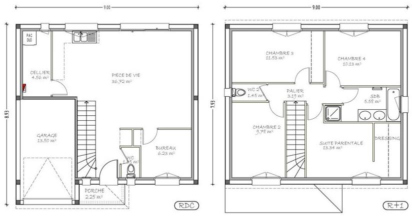

03 Séquence A · Activité 03
Plan de votre habitation
Établir les plans et coupes architecturaux nécessaires à la description de votre logement.
Établir les plans et coupes architecturaux nécessaires à la description de votre logement.
O4 - Communiquer une idée, un principe ou une solution technique, un projet, y compris en langue étrangère.
CO4.1. Décrire une idée, un principe, une solution, un projet en utilisant des outils de représentation adaptés.
Comment modéliser votre habitation afin que sa représentation soit exploitable par tous les acteurs professionnels susceptibles d’intervenir pour une étude ou des travaux ?
Quelle que soit l’étude à faire d’un bâtiment, en l’occurrence ici votre habitation, il convient d’en connaître précisément les formes, les dimensions, les surfaces et les volumes, mais aussi l’orientation, l’usage des différentes pièces ou encore la composition des différentes parois qui composent l’enveloppe, etc.
On devine facilement les limites du langage écrit pour décrire un système pluri-technologique telle qu’une habitation et l’importance dans ce cas d’un langage graphique commun à tous.
Le travail qui vous est demandé avant toute autre étude, consiste donc à établir les plans et coupes architecturaux nécessaires à la description et à la compréhension de votre habitation dans le respect des normes de représentation décrite dans la fiche outil ad hoc.
Une fois établis, ces plans serviront de base aux différentes études énergétiques que vous aurez à réaliser.

Sur feuille A3, chaque élève doit dessiner avec ses outils son logement montrant les formes, dimensions, ouvertures, échelle et tout ce qui semblera important à dessiner.
À la fin de séance vous devrez fournir :
Ce site a été réalisé par Abdellah CHELOUAH.